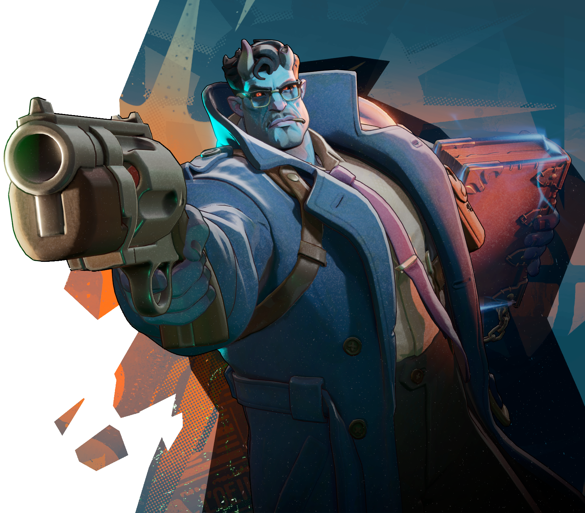

Access is currently limited to friend invite via our playtesters.

Abrams is a hard-boiled, hard-hitting bruiser of a character that focuses on engaging enemies in close combat. Abrams is a juggernaut on the battlefield, tapping into the dark power of his Tome to Siphon Life from nearby enemies and utilizing his Infernal Resilience to brush off the damage he takes. With a sudden Shoulder Charge or area stun from his Seismic Impact, he can aggressively initiate fights and isolate fragile targets from the rest of their team to set up a devastating burst of damage. A capable and well-known detective of New York, Abrams solved crimes ranging from kidnappings to ritual murders. One day, a mysterious Tome was left on his desk with a note of "Don't let them have it" scrawled in Onyx blood; followed by car bombings and break-ins to his office. Now, Abrams is trying to figure out just what the hell is going on.